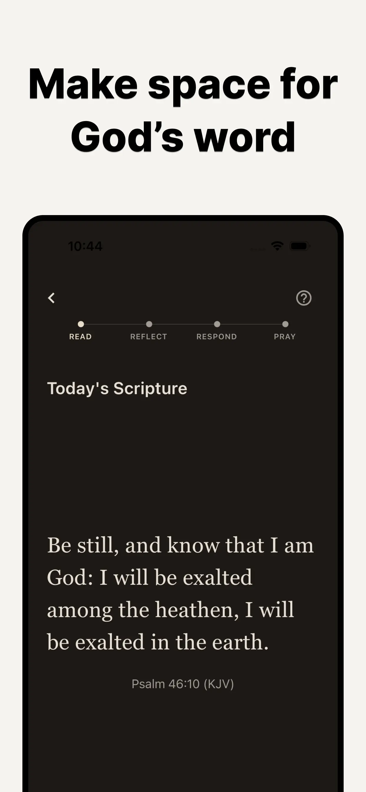

Bible Focus › Guides › Start a Daily Devotional
How to Start a Daily Devotional: A Beginner's Guide
Maybe you've never done a devotional. Maybe you did for years, drifted, and the Bible on your shelf has become quietly heavy to look at. Either way, the way back in is the same — and it's far smaller than you think.
What a daily devotional actually is
Strip away the intimidation and a devotional is just this: a short, intentional time with God and His Word. Not a seminary class. Not a performance. You read a passage of Scripture, sit with it honestly, respond to it, and pray. That's the whole thing.
"Be still, and know that I am God."Psalm 46:10
The biggest beginner mistake: starting too big
Most people start with "a chapter a day" or a 45-minute morning plan, run on enthusiasm for nine days, miss two, feel guilty, and quit. The failure wasn't devotion — it was dosage. Three faithful minutes every day will take you further than thirty ambitious minutes that stop in week two. Small enough to never skip; deep enough to matter.
The 4-step structure (used by Bible Focus)
- READ — one passage, slowly. Not a chapter. One carefully chosen passage. Read it twice if you like; you're not in a hurry.
- REFLECT — sit with the words. What word or phrase stands out? Don't force an insight. Just notice what stays.
- RESPOND — write a line or two. "The word 'still' stayed with me today. I don't know how to be still yet." That's a perfect entry. Honesty over eloquence, always.
- PRAY — close simply. Talk to God about what you read. A sentence is enough.
This rhythm — read, reflect, respond, pray — is a gentle, modern echo of how Christians have read Scripture for centuries. Bible Focus walks you through each step daily, so you never open the app wondering what to do.

How to actually stay consistent
- Attach it to something you already do. With your morning coffee, on the train, before you turn off the lamp. (More in our morning devotion routine guide.)
- Remove the competition. The #1 devotion killer isn't laziness — it's the phone in your hand. Bible Focus can block your distracting apps during devotion, or keep them locked until devotion is done.
- Skip the streak guilt. Bible Focus deliberately has no streaks and no social pressure. A quiet calendar records completed days; a missed day is just a missed day. Come back tomorrow.
- Let your reflections accumulate. Six months of two-line responses becomes something precious: a record of what God's Word did in you, in your own words.
Your first devotion takes 3 minutes
One verse a day · Read, Reflect, Respond, Pray · Free on iOS